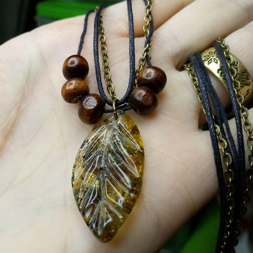
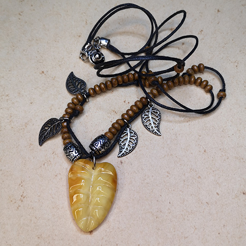
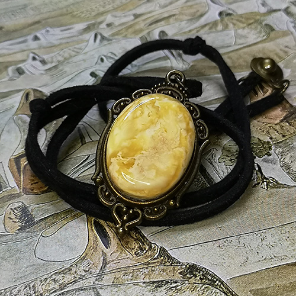

Подвеска или кулон? Казалось бы, какая между ними разница? А она есть.
Кулон - это одиночное украшение из драгоценных металлов и самоцветов, которое носят на шее на шнурке или цепочке.
Это украшение известно со времен палеолита и возможно одно из древнейших. Могло иметь ритуальное значение, а также служило для выражения социального статуса. Клык или коготь животного носил самый сильный охотник.

{kind=link}
Плетеный шнур, цепь, дерево, металл, янтарь с включениями

{kind=link}
Плетеный шнур, дерево, металл, янтарь

{kind=link}
Фантазийный

Неправильной формы с включениями почвы и фрагментов растений

Полупрозрачный с эффектом дымки.
Подвеска же универсальна. Она может использоваться как украшение на шею, в браслете, серьгах, брошах, кольцах, на сумках (элемент декора). Изготавливается из всевозможных материалов: золото, серебро, кожа, дерево, стекло, различные сплавы, пластик и др. На одном шнурке(цепочке) может быть несколько подвесок, что легко позволяет изменить украшение к наряду по случаю или настроению.